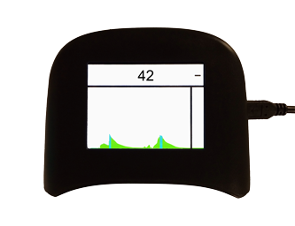

Speck

Speck is a low-cost particulate monitor currently under development by the CMU CREATE Lab as a tool for citizen science and personal exposure tracking. Through community-generated advocacy maps and data visualization, this device will enable communities and individuals to better understand and quantify the quality of the air they breathe.
The Speck Gateway is a free, open-source application which downloads data samples collected by the Speck to your computer.
|
|
|